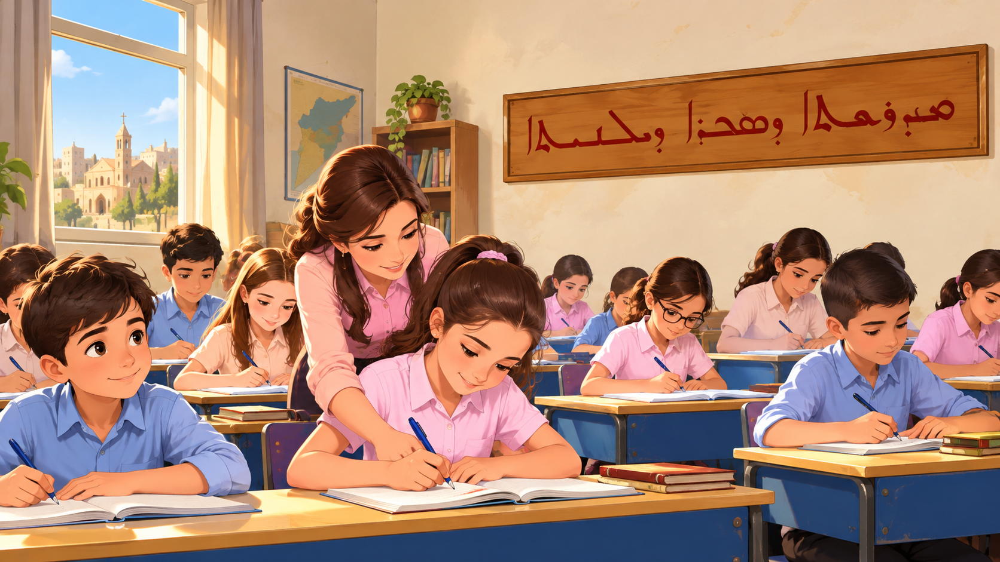

معاً من أجل مستقبل أفضل لأطفالنا
مبادرة لدعم طلاب المدارس السريانية في القامشلي والمساهمة في تغطية جزء من أقساطهم المدرسية، بشفافية ومسؤولية.

التقدم نحو الهدف
لم يبدأ جمع التبرعات بعد؛ لا تعني هذه النسبة وجود بيانات مالية مؤكدة.
هدف المبادرة لهذا العام
484 طالباً في المرحلة الابتدائية و234 في المرحلة الإعدادية.
مبادئنا
التعليم أولاً
مساعدة الطلاب الأكثر حاجة على متابعة تعليمهم.
الشفافية
نشر تقارير عن المبالغ المجموعة والمدفوعة دون كشف بيانات الطلاب.
الاستمرارية
العمل على مبادرة مستدامة بدلاً من حملة مؤقتة.
من نحن
نحن مجموعة من أبناء القامشلي وأصدقائها، نعمل على إطلاق مبادرة لدعم تعليم الطلاب في المدارس السريانية بالمدينة.
تهدف المبادرة إلى المساهمة في تسديد نصف القسط المدرسي السنوي للطلاب المستهدفين، بالتعاون مع جهة موثوقة على الأرض، ومن خلال حساب جمعية في أوروبا.
اسم الجمعية المسؤولة ورقم تسجيلها وشركاؤها سيُضافون هنا بعد اعتمادهم رسمياً. هذه نسخة تجريبية للموقع.
ساهم في دعم التعليم
كل مساهمة تساعدنا على الاقتراب من هدف دعم الطلاب.
التبرعات غير مفعّلة بعد. ستُضاف بيانات الحساب البنكي الرسمي للجمعية في أوروبا ووسيلة الدفع ورمز QR بعد استكمال الترتيبات القانونية والمصرفية. لا تُرسل أي أموال قبل الإعلان الرسمي.
بيانات التبرع
اسم الجمعية: بانتظار التأكيد
رقم الحساب / Bankgiro / Swish: بانتظار التأكيد
مرجع الدفع المقترح: دعم طلاب القامشلي
الشفافية والتقارير المالية
هذه الأرقام توضح الهدف المخطط فقط. لم تُدرج أي تبرعات فعلية في النسخة التجريبية.
التقدم نحو الهدف
لم يبدأ جمع التبرعات بعد؛ لا تعني هذه النسبة وجود بيانات مالية مؤكدة.
سجل التقارير
| الفترة | المبلغ المستلم | المبلغ المدفوع | الحالة |
|---|---|---|---|
| قبل إطلاق الحملة | — | — | بانتظار بدء الحملة |
سيتم تحديث التقارير بعد التحقق من كشوف الحساب وإثباتات الصرف، مع حماية خصوصية المستفيدين.
تواصل معنا
يسعدنا تلقي أسئلتكم واقتراحاتكم بشأن المبادرة.
البريد الإلكتروني الرسمي: سيُضاف لاحقاً
صفحة فيسبوك: سيُضاف الرابط لاحقاً
الجهة المسؤولة في أوروبا: بانتظار الاعتماد